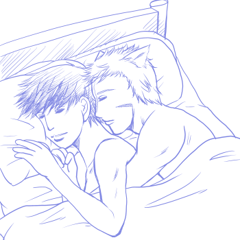
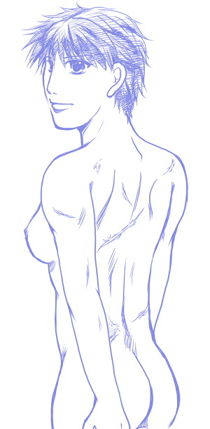

アンソロ原稿、猶予をいただいたのでちらっと息抜きに…。
ちょっとアレな感じだけどまあこんなところなので隠さずに載せてしまおう。

えーと…ライアイです。はい。もうちょっとアイクの腕太くしたり胸を膨らませてなければ普通のライアイですね。いやあ、このようなイラスト見て誰が楽しいのか謎ですが、私だけは確実に楽しいです。
早くここまで関係が進んでいるライアイ書きたいです。今書いてるシリーズものでここまで関係が進む予定でいますｗｗ 脳内ではかなりいちゃいちゃしてますがｗｗｗ
一応、段階を踏んで関係が進んでいく予定…。段階ごとの話がちゃんとあるので、それを順番に書いていかないとここまでいかないという。
なんつーか、ライアイは基本…ラブラブなのだ！！（言ってる自分がバカだと思ったら負け）
だから…ラブコメなんですよ！
スキンシップが基本。ライはにおい嗅ぎまくり。うなじ好きそうだな…。いつもうなじの辺りに顔を埋めてにおいかいで安心感を得ているといいよ。
つーか、なんでこんな唐突に裸で一緒に寝てるイラストとか描いてるんだろうとか思うかもしれないですが、事後っていいじゃないですか！ ﾊｱﾊｱ…
事後っていうか、そのまま寝ちゃって朝を迎えてちょっと寒いからくっついたまま寝てるとかいいじゃないですか！ ﾊｱﾊｱ…
イメージ的には蒼炎ED後、傭兵団の砦に遊びに来たライが来客用の布団いらずで狭いベッドの上にもぐりこんできてアイクにぴったりくっついて寝ようとするんですが…そこでいちゃいちゃしているうちにいたしてしまって、夜トイレに起きた団員の誰かに変な声とか聞かれてたりして、朝にはごはんできたよと言いにくるミストとかにちらっと目撃されてるといいよ！（何この具体的な妄想…）
こんな…実は仲がよろしくて関係が進んでいる様子をそこはかとなく目撃されてたりすると萌えます（何このピンポイントな萌えは…）
もう一つイラスト描いたのですが、裸体なのでさげておこう… 
どうにもにょたあいくはちょっと安産体型というかアスリート体型というか…そんな感じで描いてしまったりする…。あまり華奢で可愛いという感じになり難い。うーん、あんな重い剣（ラグネルとか）振り回せるくらいだってことで。
でもおっぱいは譲れないしってことで。横乳いいね！
私はちょいとむっちり目の女の子が好きだ〜。
そして傷跡があるということでそんな絵。戦闘で受けた傷が細かくいろいろと…。
ファンタジー的にこういう女の子も萌える。
そういえば、ベルセルクのキャスカもそういう感じで地味に萌えていた。特に女ということは隠してなくて普通に戦っていて脱いだら結構傷だらけだったな。ジェンダーとかそういうにおいはないのがよかったね。ってここ見てる人でこんなこと言っても通じるのか謎だけどまあいい。
基本的ににょたあいくはジェンダーについてはあまり追求しないように気をつけたい。突き詰めるとそっちに行ってしまいそうだけど、あくまでも先天性の場合…特に女に生まれてきたことが嫌だったとかそんなことは気にしていなく普通に過ごして頑張っているって感じでいきたいなあと。アイクだし…。話を書いていると基本的にはあまり性格は変わらないなあと思ったり。ただ、そのときどきで女の子だった場合はどういう行動をするかとか思考をするかというぶれを書けたら面白いなとか。
後天性のにょただとそれはまた別モノで…戸惑いを書くのが楽しいのですが！
いずれ、後天性のネタも書きたいですね。